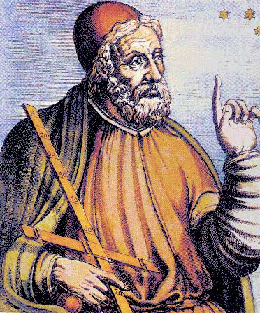

Ptolemy (c. 90 – c. 168
A.D.)--The Great Compiler
- In Antiquity, the inquiry into the workings of the universe took aime
at such practical goals as establishing a reliable calendar and determining
how to cure a variety of illnesses.
- Ptolemy developed the most comprehensive geocentric model.
- He defined the modern magnitude system.
- He refined the geometric model of the Solar system using epicycles, deferents, and equants to explain the motion of the planets.
- In the Ptolemaic model, epicycle is the circular orbit of a planet the
center of which revolves around the Earth in another circle, the deferent.
- Epicycles could explain (incorrectly) the retrograde (backwards) motion
of the planets.
- Ptolemy’s model, presented in his book called the Almagest, held sway
for more than 1,300 years.

Ptolemaic model
-
 In
the Ptolemaic system, each planet is moved by two or more spheres: one
sphere is its deferent which is centered on the Earth, and the other sphere
is the epicycle which is embedded in the deferent.
In
the Ptolemaic system, each planet is moved by two or more spheres: one
sphere is its deferent which is centered on the Earth, and the other sphere
is the epicycle which is embedded in the deferent.
- The planet is embedded in the epicycle sphere.
- The deferent rotates around the Earth while the epicycle rotates within
the deferent, causing the planet to move closer to and farther from Earth at
different points in its orbit, and even to slow down, stop, and move
backward (in retrograde motion).
- The epicycles of Venus and Mercury are always centered on a line between
Earth and the Sun (Mercury being closer to Earth), which explains why they
are always near it in the sky.
- The Ptolemaic order of spheres from Earth outward is:
- Moon
- Mercury
- Venus
- Sun
- Mars
- Jupiter
- Saturn
- Fixed Stars
- Sometimes the size of a planet's retrograde loop (most notably that of
Mars) would be smaller, and sometimes larger. This prompted him to come up
with the idea of an equant.
- The equant was a point near the center of a planet's orbit which, if you
were to stand there and watch, the center of the planet's epicycle would
always appear to move at the same speed.
- Therefore, the planet actually moved at different speeds when the
epicycle was at different points on its deferent. By using an equant,
Ptolemy claimed to keep motion which was uniform and circular, but many
people did not like it because they did not think it was true to Plato's
dictum of "uniform circular motion."
The resultant system which eventually came to be widely accepted in the west
was an unwieldy one to modern eyes; each planet required an epicycle revolving
on a deferent, offset by an equant which was different for each planet. But it
predicted various celestial motions, including the beginnings and ends of
retrograde motion, fairly well at the time it was developed.
 In
the Ptolemaic system, each planet is moved by two or more spheres: one
sphere is its deferent which is centered on the Earth, and the other sphere
is the epicycle which is embedded in the deferent.
In
the Ptolemaic system, each planet is moved by two or more spheres: one
sphere is its deferent which is centered on the Earth, and the other sphere
is the epicycle which is embedded in the deferent.